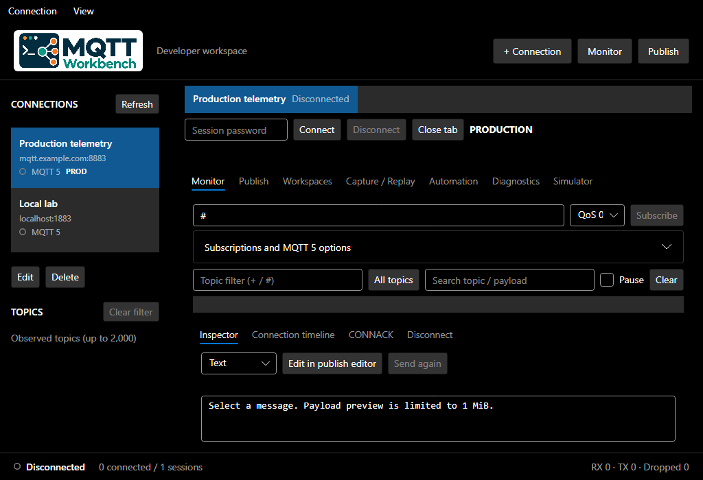
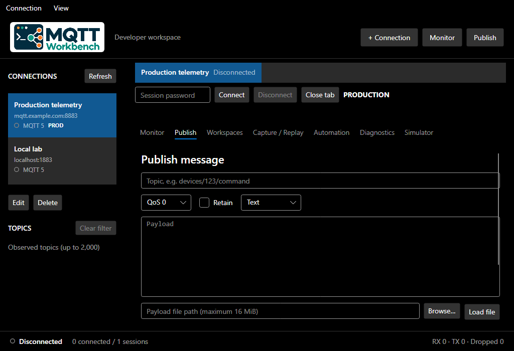
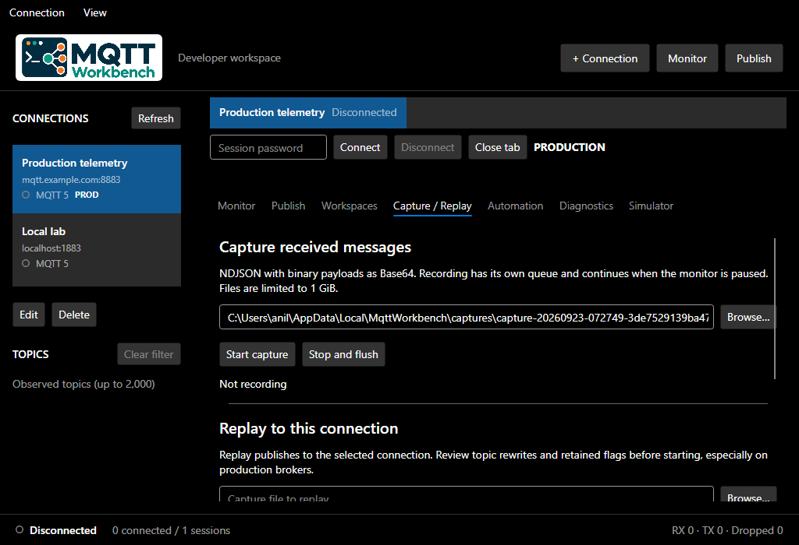
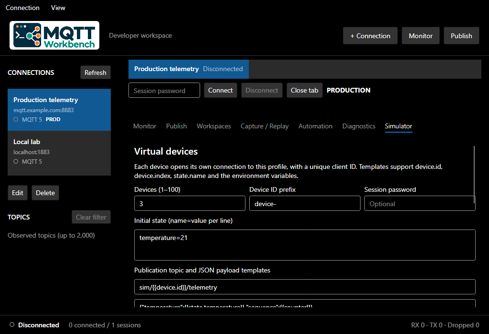

Bağlantılar bir arada
Birden fazla broker’a bağımsız sekmelerden bağlanın. Profilleri kaydedin, TLS ve WebSocket seçenekleriyle ortamınıza uyum sağlayın.
Çoklu bağlantıMQTT İÇİN ÇALIŞMA ALANINIZ
Broker bağlantısından cihaz simülasyonuna: MQTT geliştirme, hata ayıklama ve test araçlarınız tek bir masaüstü uygulamasında.
{
"device": "sensor-01",
"temperature": 24.6,
"humidity": 48,
"status": "online"
}DAHA AZ ARAÇ DEĞİŞTİRİN
IoT geliştirirken ihtiyaç duyduğunuz görünürlük ve kontrol. Canlı trafiği inceleyin, mesajları düzenleyin ve test senaryolarınızı tekrar çalıştırın.
Birden fazla broker’a bağımsız sekmelerden bağlanın. Profilleri kaydedin, TLS ve WebSocket seçenekleriyle ortamınıza uyum sağlayın.
Çoklu bağlantıGelen trafikten keşfedilen topic’lere tıklayarak odaklanın. Mesajları metin, JSON, hex veya Base64 olarak inceleyin.
Canlı monitorMesajları publish editörüne aktarın. Metin veya dosya içeriğini QoS, retain ve MQTT 5 özellikleriyle yayınlayın.
Publish editörüTrafiği NDJSON olarak kaydedin. Hızı, hedef topic’i ve mesaj dönüşümlerini ayarlayarak seçtiğiniz broker’da yeniden oynatın.
Capture & replayDeğişkenler ve şablonlarla mesaj üretin. Tekrarlı yayın, toplu gönderim ve request/response akışları oluşturun.
OtomasyonSanal cihazlarla MQTT mesajları üretin. Bağlantı ve topic istatistiklerini inceleyerek test akışınızı takip edin.
Simülatör & diagnosticsUYGULAMAYA YAKINDAN BAKIN
Bağlantınız görünür kalırken araçlar arasında geçin. Aşağıdaki görseller doğrudan masaüstü uygulamasından alınmıştır.
Açık ve koyu tema desteği.
Burada koyu tema gösteriliyor.




FİKİRDEN DOĞRULAMAYA
Profiller, çalışma alanları ve kayıtlı mesajlarla kaldığınız yere daha kolay dönün.
Masaüstünüzde yer açınBroker profilinizi oluşturun, bağlantıyı açın ve ihtiyacınız olan topic’lere abone olun.
Mesaj içeriğini ve MQTT özelliklerini inceleyin. Filtrelerle aradığınız trafiğe odaklanın.
Mesajı değiştirip yayınlayın; kayıt, replay ve otomasyonla senaryonuzu tekrar test edin.
MASAÜSTÜNÜZ İÇİN
Windows ve Linux üzerinde aynı MQTT araçlarıyla çalışın.
İndirme bağlantıları yayınlandığında burada yer alacak.
Windows 10 ve Windows 11 · Sürüm 0.1.5
Windows için indirİndirme bağlantısı yakında
Microsoft Store’da görüntüleUbuntu, Debian ve Fedora
Linux paketlerini seçİndirme bağlantısı yakında
Sürüm 0.1.5 · x64Ubuntu / Debian için indir (.deb)Fedora için indir (.rpm)Taşınabilir indir (.tar.gz)Taşınabilir indir (.zip)KISA YANITLAR
IoT geliştiricileri, gömülü yazılım ekipleri ve MQTT tabanlı sistemleri test eden herkes için. Broker trafiğini anlamak, cihaz mesajlarını denemek ve tekrar edilebilir test akışları oluşturmak için kullanabilirsiniz.
MQTT 3.1.1 ve MQTT 5.0 desteklenir. TCP, TLS, WebSocket ve güvenli WebSocket bağlantıları; QoS 0, 1, 2 ve retained mesajlar ile çalışabilirsiniz.
MQTT Workbench bir masaüstü istemcisidir. Mesaj alıp göndermek için kendi yerel broker’ınıza veya erişiminiz olan bir MQTT sunucusuna bağlanmanız gerekir. Ayrı bir .NET kurulumu gerektirmeyen paketler sunulur.
Topic ağacı, abone olduğunuz akışlarda alınan mesajlardan oluşur. Broker üzerindeki tüm topic’leri listelediği varsayılmaz. Bir topic’i seçerek monitor görünümünü filtreleyebilirsiniz.
Evet. Broker profillerinizi ve çalışma alanlarınızı kaydedebilirsiniz. Sekmeler, abonelikler, filtreler ve yayın taslakları geri yüklenebilir. Güvenli bir başlangıç için bağlantılar kapalı durumda açılır; otomatik yayın başlatılmaz.